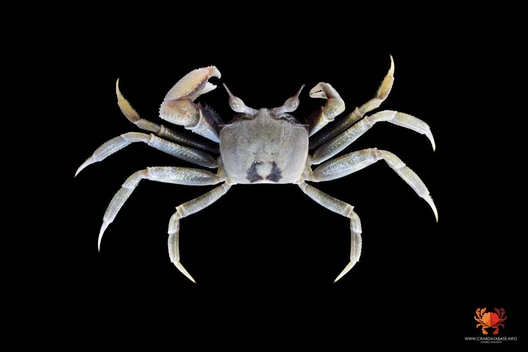

甲壳动物 · 动物界
角眼沙蟹 Ocypode ceratophthalma

眼柄末端有角状突起的沙滩蟹，奔跑速度极快，在热带海滩上挖洞而居的小型蟹类，是潮间带沙滩的常见物种。
- 分类
- 门节肢动物门纲软甲纲目十足目科沙蟹科属沙蟹属
- 栖息环境
- 热带和亚热带海滩上部，挖洞而居
- 地理分布
- 印度—太平洋海岸，包括中国南方、东南亚和澳大利亚北部
- 保护级别
- 暂无评估；对海滩开发较敏感
物种志
角眼沙蟹头胸甲近方形，眼柄很长，末端伸出角状突起，因此得名；体色浅黄、灰白或橙红色，与沙滩颜色相近，步足细长，适合在沙面上快速奔跑。
它生活在热带和亚热带的海滩上部，挖洞而居，洞口附近常堆着沙球。退潮和夜间活动，奔跑速度很快，捕食沙滩上的动物尸体、昆虫和小型无脊椎动物，也吃腐肉。角眼沙蟹分布于印度—太平洋海岸，包括中国南方、东南亚和澳大利亚北部。它是沙滩生态系统中的清道夫和捕食者，对海滩开发和人类干扰较为敏感；在海滩上看到它时，应保持距离，不要追赶捕捉。角眼沙蟹的幼体在海洋中浮游发育，变态后回到沙滩上挖洞定居，它的眼柄可以灵活转动。
形态与习性
- 食性取食动物尸体、昆虫和小型无脊椎动物
- 体型头胸甲宽约 3–4 cm
- 特征眼柄末端有角状突起
- 速度奔跑极快，是沙滩上跑得最快的动物之一
- 栖息在海滩上部挖洞，洞口常堆着沙球
- 威胁海滩开发和人类干扰影响其栖息
趣味知识
- 角眼沙蟹的眼柄末端有角状突起，所以叫角眼沙蟹。
- 它在沙滩上跑得飞快，想徒手抓住它并不容易。
- 它会在洞口堆出一堆沙球，是沙滩上常见的小景观。